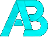

01 / FEATURED
U-skill
A TypeScript application repository with a substantial codebase, including React-oriented source structure, public assets and Supabase integration.
View repository →
DEVELOPER • AI / ML • FRONTEND
I'm interested in building things, figuring out how they work and then trying to make them a little better. I'm mainly into frontend development, AI/ML, cybersecurity and UI/UX. This site is basically a place to put some of that work in one place.
A FEW THINGS I'VE BUILT
These are a few projects from my GitHub. They aren't meant to show that I know everything. They mostly show what I've been interested in learning and what I've actually spent time building.
01 / FEATURED
A TypeScript application repository with a substantial codebase, including React-oriented source structure, public assets and Supabase integration.
View repository →02 / PROJECT
A Flask web app for hiding and recovering a secret message inside an image using a key-based XOR transformation and OpenCV.
View repository →03 / PROJECT
A web calculator supporting basic and advanced functions, calculation history, responsive layouts and local-storage persistence.
View repository →04 / PROJECT
A Python console logic game where players deduce a secret three-digit number using Fermi, Pico and Bagels clues.
View repository →05 / PROJECT
A Python game with random number generation, input validation, higher/lower feedback, a seven-attempt limit and restart support.
View repository →A LITTLE MORE ABOUT ME
My GitHub shows the things I've worked on, while my education and internships show what I've been learning along the way. I'm now looking for an opportunity where I can turn that learning into useful work and keep improving.
A little more about me →LOOKING FOR WORK
I'm currently looking for opportunities where I can learn, contribute and grow. If you're hiring for an entry-level role, internship or a place where I can build real things with a team, I'd be glad to hear from you.
Get In Touch